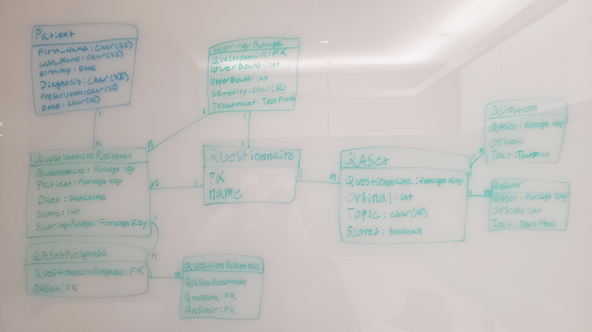

Technologies
- Django
- - Templating, backend data interaction, control logic
- Django Crispy Forms
- - Form bootstrapification
- uWSGI
- - Passing requests from nginx to django site instance
- Nginx
- - Serving web pages to end clients
- - Reverse proxy for django site instances
Project structure
- Project Root /
-
- PsyGuideSite/
- - Root for django project
-
-
- setup.sh
- - Utility file for updating migrations/database during development
-
- PsyGuideSite/
- - Config for parent project
-
- - Child app inclusion
-
- - wsgi server config
-
- common_templates/
- - HTML shared between apps
-
- fixtures/
- - Dummy data for patients and questionnaires development
-
- flowchart/ app
- - Flowchart plan viewing/editing
-
- questionnaire/ app
- - Questionnaire administering
-
- prescriber/ app
- - Prescriber facing site
-
-
- templates/
- - index template
-
- - login/register template
-
- static/
- - Statically served content (css, info pages)
-
Model Layout
Models are used to store data from patients and questionnaires/responses

Flowcharts are not yet operational.
Setting Up
Testing/debugging
Getting up and running is really simple.
Install Prerequisites
- Python3
- django
-
django-crispy-forms
pip install django-crispy-forms
Clone and Run
$ git clone https://github.com/friday-the-13th/Front-end$ cd ./Front-end/PsyGuideSite$ python manage.py runserver- Navigate to localhost:8000 in your browser to see the test server.
Server-Side
This guide was used primarily to link all the moving parts together.
uWSGI is used in conjunction with Nginx to serve webpages rendered by django after being passed through.